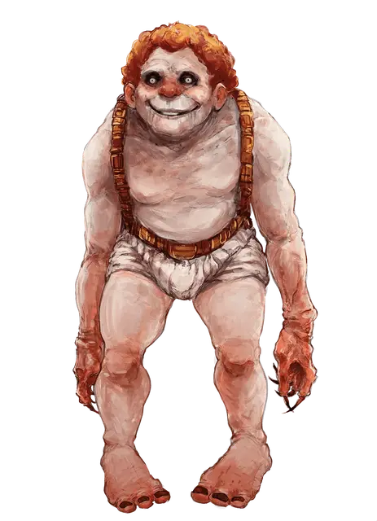

Дитя лавы
Lava Child
Средний Гуманоид (Дитя лавы), нейтральный

Класс Доспеха 11
Хиты 60 (8к8 + 24)
Скорость 25 футов, лазая 20 футов
| мод | спас | ||
|---|---|---|---|
| СИЛ | 18 | +4 | +4 |
| ЛОВ | 13 | +1 | +1 |
| ТЕЛ | 16 | +3 | +3 |
| мод | спас | ||
|---|---|---|---|
| ИНТ | 11 | +0 | +0 |
| МДР | 10 | +0 | +0 |
| ХАР | 10 | +0 | +0 |
Навыки Атлетика +6, Выживание +2
Иммунитет к урону огонь; дробящий, колющий, рубящий от оружия из металла
Чувства тёмное зрение 60 футов, пассивное Восприятие 10
Языки Общий, Игнан
Опасность 3 (700 опыта)
Бонус мастерства +2
Особенности
Иммунитет к металлу. . Дитя лавы может беспрепятственно перемещаться сквозь металл, и у него есть преимущество в бросках атаки против любого существа, носящего металлическую броню или использующего металлический щит.
Действия
Мультиатака. . Дитя лавы совершает две атаки: одну Укусом и одну Когтями.
Укус. . Рукопашная атака оружием: +6 к попаданию, досягаемость 5 футов, одна цель. Попадание: 11 (2к6 + 4) колющего урона.
Когти. . Рукопашная атака оружием: +7 к попаданию, досягаемость 5 футов, одна цель. Попадание: 7 (1к6 + 4) рубящего урона.
Описание
Физически похожие друг на друга, дети лавы имеют мускулистое телосложение и детские, постоянно улыбающиеся лица. Большинство из них родились в Фонтанах Мироздания, известном как План Магмы, находящимся между Элементарными Планами Земли и Огня. Дети лавы образуют сообщества в вулканических пещерах, служа из-за страха изначальным существам или поклоняясь богам земли и огня.
Хотя они и не являются жестокими по своей природе, дети лавы яростно защищают территорию, которую они считают своей. Многие злоумышленники были одурачены улыбкой детей лавы, считая себя желанным гостем, в то время когда их на самом деле собирались разорвать на части. Дети лавы обычно держатся поближе к своим убежищам, но активно охотятся, когда заканчиваются запасы пищи.
Рождённые Лавой. Первые дети лавы были созданы путём слияния духов земли и огня. Достигнув совершеннолетия, дитя лавы обретает способность производить потомство. Взрослая особь откладывает несколько яиц в течение своей жизни, которая составляет примерно пятьдесят лет. До своего вылупления яйца проходят инкубационный период в лужах расплавленной магмы. Розовый, улыбающийся новорожденный взрослеет с той же скоростью, что и человек.
Родитель защищает свое потомство до тех пор, пока новое дитя лавы не станет достаточно сильным, чтобы защитить себя и самостоятельно прокормиться. Дети лавы едят мясо, кости, бумагу, растения и почти все остальное, что не сделано из металла или камня. Вареное мясо их любимое блюдо.